JavaWeb基础
JSP页面元素
a.脚本Scriptlet
<% 局部变量、java语句 %> <%! 全局变量、定义方法 %> <%= 输出表达式 %> 这里的局部变量的作用域并不是局限于<% .....%>，这是因为JSP最终都会转译为servlet，全局变量为该类的成员变量，作用域为整个类；而局部变量被写在了service方法当中，为客户端向服务端的servlet中，service()方法中的本地变量只能每响应一次请求就重建一次。 全局变量在关闭该网页、关闭浏览器、更换浏览器，再重新访问该jsp页面后仍然持续保留之前的值（服务器仍然保留着该servlet）； 但在清除tomcat的work文件夹，或重启tomcat后恢复初始值。 <!DOCTYPE html> <html> <head> <meta charset="UTF-8"> <title>Insert title here</title> </head> <body> <% int x = 1; %> <%! int y = 1; %> hello Jsp <br> <% x++; y++; %> <%="x的值：" + x + "y的值：" + y %> </body> </html> 输出为 hello Jsp x的值：2y的值：2 但是刷新页面，也就是重新提交请求后 y的值会逐渐变大： hello Jsp x的值：2y的值：61
2
3
4
5
6
7
8
9
10
11
12
- b.指令
- page指令：
- ```jsp
<%@ page language="java" contentType="text/html; charset=UTF-8"
pageEncoding="UTF-8" import = "java.util.Date"%>
language：jsp页面使用的脚本语言
import：导入的类
pageEncoding：jsp自身编码 JSP最终是要编译成java的
contentType：浏览器解析Jsp的编码c. 注释
<!-- html 注释--> java注释 // /**/ jsp注释 <%-- --%>1
2
3
4
5
6
7
8
9
10
11
12
13
14
15
16
17
18
19
20
21
22
23
24
25
26
27
28
29
30
31
32
33
34
35
36
37
38
# JSP9大内置对象（自带的，不需要new 也能使用的对象）
- out ：输出对象，向客户端输出内容，当浏览器访问时，浏览器就是客户端
- request：请求对象，存储"客户端向服务端发送的请求内容"
- void setCharacterEncoding(String encoding)用来确保发往服务器的参数的编码格式例如"utf-8"
- String getParameter(String name)根据请求的字段名key（input标签的name属性值），返回字段值（也就是input标签的value属性）
- String[] getParameterValues(String name);根据请求的字段名key，返回多个字段值values，通常使用checkbox
- request.getRequestDispatcher("b.jsp").forward(request, response);请求转发 跳转页面 A->B
- ServletContext getServletContext();获取项目的ServletContext 对象
Demo1：注册 register.jsp --> registerResult.jsp
```jsp
<!-- register.jsp -->
<%@ page language="java" contentType="text/html; charset=UTF-8"
pageEncoding="UTF-8"%>
<!DOCTYPE html>
<html>
<head>
<meta charset="UTF-8">
<title>Insert title here</title>
</head>
<body>
<form action="registerResult.jsp" method="get">
用户名：<input type="text" name="uname"/><br/>
密码：<input type="password" name="upwd"/><br/>
年龄：<input type="text" name="uage"/><br/>
爱好：<br/>
<input type="checkbox" name="uhobbies" value="足球"/>足球、
<input type="checkbox" name="uhobbies" value="篮球"/>篮球、
<input type="checkbox" name="uhobbies" value="乒乓球"/>乒乓球<br/>
<input type="submit" value="注册">
</form>
</body>
</html>
1
2
3
4
5
6
7
8
9
10
11
12
13
14
15
16
17
18
19
20
21
22
23
24
25
26
27
28
29
30
31<!-- registerResult.jsp -->
<%@ page language="java" contentType="text/html; charset=UTF-8"
pageEncoding="UTF-8"%>
<!DOCTYPE html>
<html>
<head>
<meta charset="UTF-8">
<title>Insert title here</title>
</head>
<body>
<%
request.setCharacterEncoding("utf-8");
String name = request.getParameter("uname");
int age = Integer.parseInt(request.getParameter("uage"));
String pwd = request.getParameter("upwd");
String[] hobbies = request.getParameterValues("uhobbies");
%>
注册成功,信息如下:<br/>
<%="name:" + name %><br/>
<%="age:" + age%><br/>
<%="pwd:" + pwd%><br/>
<%
if (hobbies != null ){
for (String hobby : hobbies){
out.print(hobby + " ");
}
}
%>
</body>
</html>get提交方式：method = “get” 和地址栏、超链接（）请求方式默认都属于get提交方式
get与post区别：
- get方式 在地址栏显示请求信息（但是地址栏能够容纳的信息有限，4-5kb，如果请求数据存在大文件，会出现地址栏无法容纳全部的数据而出错），post不会显示
- 文件上传，必须是post
response响应对象
- void addCookie(Cookie cookie)：服务端向客户端增加Cookie对象
- void sendRedirect(String location) throws IOException; 重定向页面跳转
Demo1：登录 login.jsp -> checkLogin.jsp -> loginSuccess.jsp
1
2
3
4
5
6
7
8
9
10
11
12
13
14
15
16
17
18<!-- login.jsp -->
<%@ page language="java" contentType="text/html; charset=UTF-8"
pageEncoding="UTF-8"%>
<!DOCTYPE html>
<html>
<head>
<meta charset="UTF-8">
<title>Insert title here</title>
</head>
<body>
<form action="checkLogin.jsp">
用户名：<input type="text" name="uname"/><br/>
密码：<input type="password" name="upwd"/><br/>
<input type="submit" value="登录">
</form>
</body>
</html>1
2
3
4
5
6
7
8
9
10
11
12
13
14
15
16
17
18
19
20
21
22
23
24<!-- checkLogin.jsp -->
<%@ page language="java" contentType="text/html; charset=UTF-8"
pageEncoding="UTF-8"%>
<!DOCTYPE html>
<html>
<head>
<meta charset="UTF-8">
<title>Insert title here</title>
</head>
<body>
<%
request.setCharacterEncoding("utf-8");
String name = request.getParameter("uname");
String pwd = request.getParameter("upwd");
if ("sza".equals(name) && "sza0415".equals(pwd)){
response.sendRedirect("loginSuccess.jsp");
//request.getRequestDispatcher("loginSuccess.jsp").forward(request,response);
}else{
out.print("ERROR");
}
%>
</body>
</html>1
2
3
4
5
6
7
8
9
10
11
12
13
14
15
16
17
18
19<!-- loginSuccess.jsp -->
<%@ page language="java" contentType="text/html; charset=UTF-8"
pageEncoding="UTF-8"%>
<!DOCTYPE html>
<html>
<head>
<meta charset="UTF-8">
<title>Insert title here</title>
</head>
<body>
登录成功!!!
欢迎您:<br/>
<%
String name = request.getParameter("uname");
String pwd = request.getParameter("upwd");
%>
<%=name%>
</body>
</html>请求转发和重定向的区别：
请求转发 重定向 地址栏是否改变 不变（checkLogin.jsp） 改变(loginSuccess.jsp) 是否保留第一次请求的数据 保留 不保留 请求的次数 1 2 请求转发是服务端行为,重定向是客户端行为. 客户端向服务端请求资源(发现没有),服务端调用请求转发,调用内部方法获得资源,最后返回客户端.而重定向是客户端向服务端请求资源,服务端不为客户端寻找资源,而是发送资源新的地址给客户端,客户端重新根据该地址再去向服务端请求资源.
从地址栏显示来说
forward是服务器请求资源,服务器直接访问目标地址的URL,把那个URL的响应内容读取过来,然后把这些内容再发给浏览器.浏览器(客户端)根本不知道服务器发送的内容从哪里来的,所以它的地址栏还是原来的地址.redirect是服务端根据逻辑,发送一个状态码,告诉浏览器重新去请求那个地址.所以地址栏显示的是新的URL.
从数据共享来说
forward:转发页面和转发到的页面可以共享request里面的数据.
redirect:不能共享数据.从运用地方来说
forward:一般用于用户登陆的时候,根据角色转发到相应的模块.
redirect:一般用于用户注销登陆时返回主页面和跳转到其它的网站等从效率来说
forward:高.
redirect:低.
session
- Cookie不是内置对象,因而需要new:Cookie对象是由服务端产生,再发送给客户端保存.相当于本地缓存的作用.
- public Cookie(String name, String value)
Demo: response_AddCookies.jsp -> Cookie_GetResult.jsp
1
2
3
4
5
6
7
8
9
10
11
12
13
14
15
16
17
18
19
20
21<!-- response_AddCookies.jsp -->
<%@ page language="java" contentType="text/html; charset=UTF-8"
pageEncoding="UTF-8"%>
<!DOCTYPE html>
<html>
<head>
<meta charset="UTF-8">
<title>Insert title here</title>
</head>
<body>
<%
Cookie cookie1 = new Cookie("name","sza");
Cookie cookie2 = new Cookie("age","21");
response.addCookie(cookie1);
response.addCookie(cookie2);
response.sendRedirect("Cookie_GetResult.jsp");
%>
</body>
</html>1
2
3
4
5
6
7
8
9
10
11
12
13
14
15
16
17
18
19
20
21<!-- Cookie_GetResult.jsp -->
<%@ page language="java" contentType="text/html; charset=UTF-8"
pageEncoding="UTF-8"%>
<!DOCTYPE html>
<html>
<head>
<meta charset="UTF-8">
<title>Insert title here</title>
</head>
<body>
<%
Cookie[] cookies = request.getCookies();
for (Cookie cookie : cookies){
out.print("-----------------------------<br/>");
out.print(cookie.getName() + cookie.getValue() + "<br/>");
}
%>
</body>
</html>application
config
pageContext
page
exception
JSP运行原理
当用户访问JSP页面时，JSP页面的处理过程如图所示:
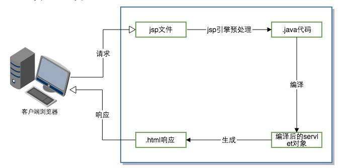JSP预处理和编译阶段
客户第一次请求jsp页面时，jsp引擎会将jsp文件中的脚本代码(HTML)和代码片段(Java代码)全部转换为java代码，转换过程非常直观：对于HTML文本只需要用简单的out.println方法包裹，对于java脚本只做保留或简单的处理。预处理阶段把jsp文件解析为java代码，编译阶段jsp引擎把java代码编译成servlet类文件，对于Tomcat，生成的class文件默认情况下存放在<Tomcat>/work目录下。可以简单看一下index.jsp生成的index_jsp.java代码:
1 | public void _jspService(final javax.servlet.http.HttpServletRequest request, final javax.servlet.http.HttpServletResponse response) |
可以看到生成的_jspService(request,response)
1 | public void _jspService(final javax.servlet.http.HttpServletRequest request, final javax.servlet.http.HttpServletResponse response) |
和我们自己编写的Servlet是相同的。
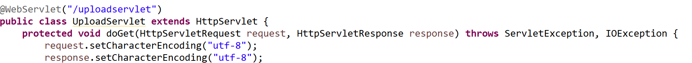但是值得注意的是，JSP九个内置对象，request和response是作为_jspService的参数传入，而其余的内置对象，则会在后续的代码中声明并初始化：
1 | // 声明其余内置对象 |
1 | // 初始化其余内置对象 |
这也就可以解释，在Servlet的监听器当中，为什么第一次访问jsp页面（pageContext.getSession()），会调用pageContext.getSession()监听器的sessionCreated方法：
1 | public void sessionCreated(HttpSessionEvent se) |
JSP响应阶段
编译后的class对象被加载到容器中，并根据用户的请求生成HTML格式的响应页面返回给客户端。
在执行jsp网页时，通常分为两个时期：转译时期和请求时期。转译时期jsp页面被翻译成Servlet类，然后编译成Class文件;用户请求时期，servlet类被执行，生成HTML响应至客户端。
jsp的转译和请求都在在第一次访问时进行的，所以用户在第一次访问jsp页面时响应时间会比较长。在之后的请求中，这些工作已经完成，时间延长问题不存在了。在处理后续的访问时jsp和servlet的执行速度是一样的。
容器、jsp容器、jsp引擎
jsp要转译为servlet，但是servlet没有main()方法，servlet对象的创建、方法的调用由web容器来实现。以Tomcat为例，先看一下Tomcat的总体结构：
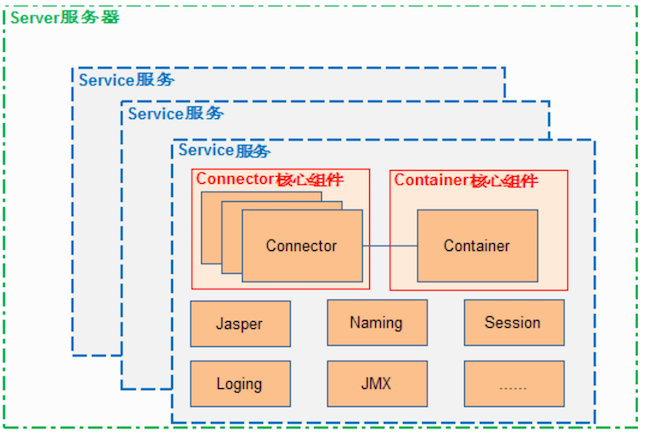从图中可以看出，Tomcat的核心组建是connector和Container，container就是容器。容器就是负责管理控制servlet的应用程序。图中的jasper就是解析jsp的jsp引擎。Tomcat既是servlet容器又是web服务器，也是jsp引擎。
JSP 四种作用域
request（请求对象）：代表客户端的HTTP请求，包含了客户端发送的参数和数据。
response（响应对象）：代表服务器对客户端的HTTP响应，用于向客户端发送数据和控制响应的行为。
session（会话对象）：代表客户端和服务器之间的会话，用于在多个请求之间共享数据。
application（应用程序对象）：代表整个Web应用程序，用于在不同的用户会话之间共享数据。
out（输出对象）：用于向客户端发送输出，可以将内容直接写入响应流中。
config（配置对象）：代表当前JSP页面的配置信息，例如JSP页面的初始化参数。
page（页面对象）：代表当前JSP页面本身，可以用于调用JSP页面中定义的方法。
pageContext（页面上下文对象）：提供了对当前JSP页面上下文的访问，包括其他内置对象的访问。
exception（异常对象）：代表在JSP页面中发生的异常，可以用于处理异常情况。
JSP中page和pageContext的区别
page，JSP网页本身，page对象是当前页面转换后的Servlet类的实例，很少使用page对象
pageContext，javax.servlet.jsp.PageContext的实例，该对象代表该JSP页面上下文，使用该对象可以访问页面中的共享数据。
pageContext和page都是JSP中的内置对象，pageContext代表着JSP页面的上下文关系，能够调用、存取其他隐含对象；page代表处理当前请求时候，这个页面的实现类的实例。
- 与Context有关的内置对象，包括pageContext、session、application
- pageContext对象表示当前的JSP页面的上下文环境
- session对象表示浏览器（客户端）与服务器对话
- application表示应用程序（web应用）的上下文环境
- 与Servlet有关的内置对象，包括page和config
- page 对象表示JSP 文件转换为 Java文件后的 Servlet 对象；
- config 对象表示 JSP 文件转換为 Java 文件后的 Servlet 的 ServletConfig对象。
JSP的4种作用域
对象的作用域就是对象的生命周期和可访问性，在JSP 中有4种作用域，即页面域、请求域、会话域和应用域。
- 页面域
- 页面域（page scope）的生命周期是指页面执行期间，存储在页面域中的对象只能在它所在的页面被访问。
- 只在一个jsp页面里有效，如果把变量放到pageContext当中，就说明它的作用对象为page，没法从页面index.jsp传递到test.jsp，只要页面跳转了，它们就不见了。
- 请求域
- 请求域（request scope）的生命周期是指一次请求过程，包括请求被转发（forward）或者被包含（include）的情况，存储在请求域中的对象只有在此次请求过程中才可以被访问。
- 作用对象为request，它的有效范围是当前请求周期。
所谓请求周期，就是指从http请求发起，到服务器处理结束，返回响应的整个过程。在这个过程中可能使用forward的方式跳转了多个jsp页面，在这些页面里你都可以使用这个变量。 - request里的变量可以跨越forward前后的两页。但是只要刷新页面，它们就重新计算了。
- 会话域
- 会话域（session scope）的生命周期是指某个客户端与服务器所连接的时间，客户端在第1次访问服务器时创建会话，在会话过期或用户主动退出后会话结束，存储在会话域中的对象在整个会话期间（可以包含多次请求）都可以被访问。
- 有效范围当前会话，从浏览器打开到浏览器关闭这个过程
- 如果把变量放到session里，就说明它的作用域是session，它的有效范围是当前会话。
所谓当前会话，就是指从用户打开浏览器开始，到用户关闭浏览器这中间的过程。这个过程可能包含多个请求响应。也就是说，只要用户不关浏览器，服务器就有办法知道这些请求是一个人发起的，整个过程被称为一个会话（session），而放到会话中的变量，就可以在当前会话的所有请求里使用。
- 应用域
- 应用域（application scope）的生命周期是指从服务器开始执行服务到服务器关闭为止，其生命周期是4个作用域中时间最长的，存储在应用域中的对象在整个应用程序运行期间可以被所有 JSP 和Servlet 共享访问。
- 如果把变量放到application里，就说明它的作用域是application，它的有效范围是整个应用。
整个应用是指从应用启动，到应用结束。我们没有说“从服务器启动，到服务器关闭”，是因为一个服务器可能部署多个应用，当然你关闭了服务器，就会把上面所有的应用都关闭了。 - application作用域里的变量，它们的存活时间是最长的，如果不进行手工删除，它们就一直可以使用。
与上述三个不同的是，application里的变量可以被所有用户共用。如果用户甲的操作修改了application中的变量，用户乙访问时得到的是修改后的值。这在其他scope中都是不会发生的，page, request, session都是完全隔离的，无论如何修改都不会影响其他人的数据。
page里的变量没法从index.jsp传递到test.jsp。只要页面跳转了，它们就不见了。
request里的变量可以跨越forward前后的两页。但是只要刷新页面，它们就重新计算了。
session和application里的变量一直在累加，开始还看不出区别，只要关闭浏览器，再次重启浏览器访问这页，session里的变量就重新计算了。
application里的变量一直在累加，除非你重启tomcat，否则它会一直变大。
JSP 的4种作用域分别对应 pageContext、request、session 和 application 内置对象，这 4 个内置对象都可以通过 setAttribute（String key, Object value）方法存储数据，通过getAttribute(String key) 获取数据。
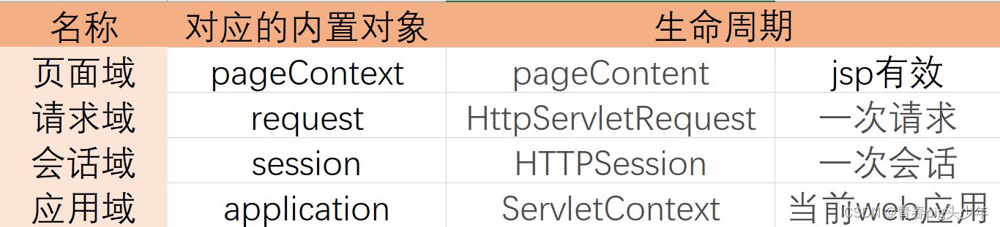JDBC
所谓安装Mysql/Oracle数据库，就是在主机安装一个数据库管理系统（DBMS），这个管理程序可以管理多个数据库。（Database Managerment System）
一个数据库中可以创建多个表，以存储数据（信息）
oracle数据库启动windows: win + r 输入services.msc 启动OracleOraDb11g_home1TNSListener
JDBC：Java DataBase Connectivity 可以为多种关系型数据库DBMS提供统一的访问方式，目的就是为了用Java来操作数据库。
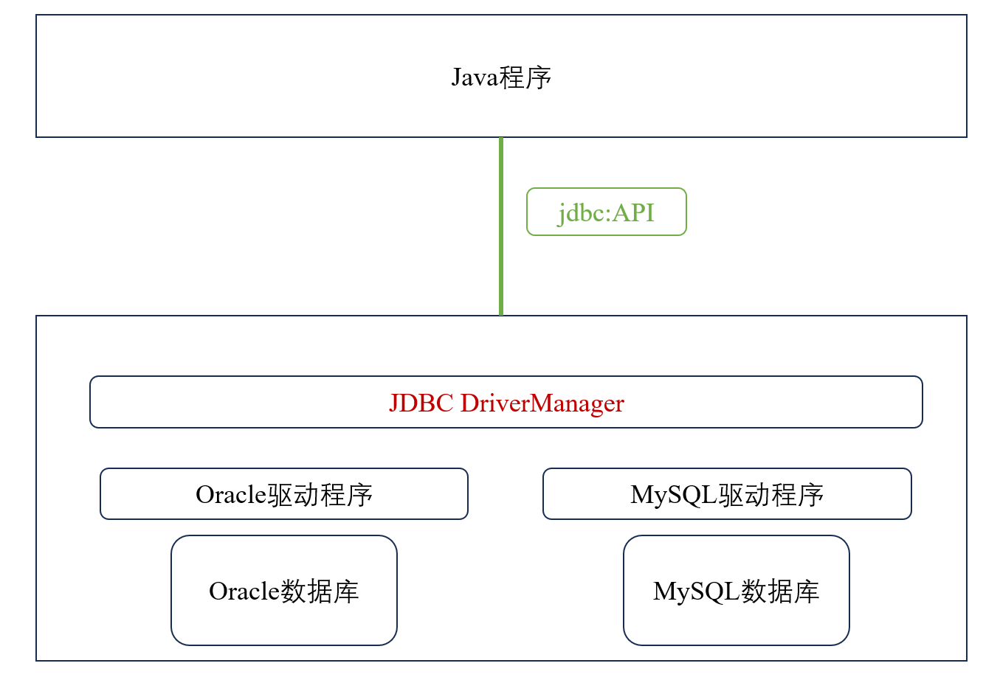操作数据库最直接的方式是通过驱动（其实就是一个jar包）来操作，不同的厂商有不同的驱动（oracle数据库就是oracle驱动程序，mysql，sqlserver分别是mysql驱动、sqlserver驱动）。
JDBC是统一的访问方式，可以屏蔽掉数据库的细节，在java程序与各个厂商驱动程序有一个JDBC DriverManager，用来管理驱动程序。
因此java程序只需要使用jdbc去操作JDBC DriverManager就可以操作不同的驱动，从而操作数据库。
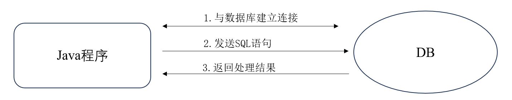- jdbc API（我们主要学的内容 ）：提供各种操作访问接口，Connection、Statement、PreparedStatement、ResultSet
DriverManager：管理jdbc驱动
Connection：连接（**通过DriverManager产生** DriverManager.getConnection(URL, USERNAME, PWD)）
Connection 产生操作数据库的对象 Statement/preparedStatement/CallableStatement
Statement（PreparedStatement）：增删改查（通过Connection产生 connection.createStatement()/connection.prepareStatement(sql)）
CallableStatement：调用数据库中的存储过程/存储函数（通过Connection产生，connection.prepareCall(sql)）
Statemen操作数据库：
- 增删改：statement.executeUpdate(sql)
- 查询：statement.executeQuery(sql)
PreparedStatement ：public interface PreparedStatement extends Statement 因此
- 增删改：preparedstatement.executeUpdate(sql)
- 查询：preparedstatement.executeQuery(sql)
此外 PreparedStatement 多了赋值操作：
- setXXX()
ResultSet：返回的数据集 （由上面的Statement产生，保存查询的结果集select ENAME,JOB from bonus）
resultset.next()光标下移，判断是否有下一条数据返回true/false
while (resultset.next() != false) { // 根据字段名查询 //String ENAME = resultset.getString("ENAME"); //String JOB = resultset.getString("JOB"); //System.out.println(ENAME + "--" + JOB); // 根据序号查询 从1开始 String ENAME = resultset.getString(1); String JOB = resultset.getString(2); System.out.println(ENAME + "--" + JOB); }1
2
3
4
5
6
7
8
9
10
11
12
13
14
15
16
17
18
19
20
21
22
23
24
25
26
27
28
29
30
31
32
33
34
35
36
37
38
39
40
41
42
43
44
45
46
47
48
49
50
51
52
53
54
55
56
57
58
59
60
61
62
63
64
65
66
67
68
69
70
71
72
73
74
75
76
77
78
79
80
81
82
83
84
85
86
87
88
89
90
91
92
93
94
95
96
97
98
99
100
101
102
103
104
105
106
107
108
109
110
111
112
113
114
115
116
117
118
119
120
121
122
123
124
125
126
127
128
129
130
- resultset.previous()：光标上移，判断上一条数据，返回true/false
- getXXX()：获得具体的字段值，可以是String字段名查询也可以是序号查询
2. JDBC DriverManager：管理不同数据库驱动
3. 各种数据库驱动，数据库厂商提供，连接和直接操作数据库
### <u>**<font color=blue>Statement实现增删改查：</font>**</u>
```java
/*Statement
* Update()：实现增删改操作
* Query()：实现查询
* */
package jdbcdemo;
import java.sql.Connection;
import java.sql.DriverManager;
import java.sql.ResultSet;
import java.sql.SQLException;
import java.sql.Statement;
import com.mysql.cj.Query;
public class JDBCStatement {
private static final String URL = "jdbc:oracle:thin:@localhost:1521:orcl";
private static final String USERNAME = "scott";
private static final String PWD = "tiger";
public static void Update() {
Statement statement = null;
Connection connection = null;
try {
//a.导入驱动，加载具体的驱动类
Class.forName("oracle.jdbc.OracleDriver");
//b.与数据库建立连接
connection = DriverManager.getConnection(URL, USERNAME, PWD);
//c.发送SQL，执行（增删改）命令
statement = connection.createStatement();
String sql = "insert into bonus values('sza1','student',1,1)";
String sql1 = "update bonus set JOB = 'mayer' where ENAME = 'sza1'";
String sql2 = "delete from bonus where ENAME = 'sza1'";
int count = statement.executeUpdate(sql1);//返回值表示增删改几条数据
//d.处理结果
if(count > 0) {
System.out.print("操作成功");
}else {
System.out.print("操作失败");
}
} catch (ClassNotFoundException e) {
e.printStackTrace();
}catch (SQLException e) {
e.printStackTrace();
}catch (Exception e) {
e.printStackTrace();
}finally {
try {
if (statement != null) {
statement.close();
}
if (connection != null) {
connection.close();
}
} catch (SQLException e) {
e.printStackTrace();
}
}
}
public static void Query() {
Connection connection = null;
Statement statement = null;
ResultSet resultset = null;
try {
//a.导入驱动，加载具体的驱动类
Class.forName("oracle.jdbc.OracleDriver");
//b.与数据库建立连接
connection = DriverManager.getConnection(URL, USERNAME, PWD);
//c.发送SQL，执行查询命令
statement = connection.createStatement();
String sql = "select ENAME,JOB from bonus";
// 增删改都是executeUpdate，查询是
resultset = statement.executeQuery(sql);//返回值表示增删改几条数据
//d.处理结果
while (resultset.next() != false) {
// 根据字段名查询
//String ENAME = resultset.getString("ENAME");
//String JOB = resultset.getString("JOB");
//System.out.println(ENAME + "--" + JOB);
// 根据序号查询 从1开始
String ENAME = resultset.getString(1);
String JOB = resultset.getString(2);
System.out.println(ENAME + "--" + JOB);
}
} catch (ClassNotFoundException e) {
e.printStackTrace();
}catch (SQLException e) {
e.printStackTrace();
}catch (Exception e) {
e.printStackTrace();
}finally {
try {
// 先开的后关 后开的先关 类似于栈
if (resultset !=null) {
resultset.close();
}
if (statement != null) {
statement.close();
}
if (connection != null) {
connection.close();
}
} catch (SQLException e) {
e.printStackTrace();
}
}
}
public static void main(String[] args) {
// Update();
Update();
}
}
PreparedStatement实现对数据库的增删改查:
1 | /*PreparedStatement实现对数据库增删改查 |
PreparedStatement与Statement在使用时的区别：
- Statement:
- sql语句
- 创建Statement对象，connection.createStatement();//sql语句可以在创建Statement对象后再写
- 执行executeUpdate(sql)/executeQuery(sql)
- PreparedStatement
- 写好sql语句（可能存在占位符）
- sql语句作为参数创建PreparedStatement对象，connection.prepareStatement(sql);
- PreparedStatement对象调用setXXX()函数填充占位符
- 执行executeUpdate()/executeQuery()，没有sql参数
推荐使用PreparedStatement：原因如下：
1.编码更加简便（避免了字符串的拼接）
String name = “zs” ;
int age = 23 ;
stmt:（Statement）
String sql =” insert into student(stuno,stuname) values(‘“+name+”‘, “+age+” ) “ ;
stmt.executeUpdate(sql);
pstmt:（PreparedStatement）
String sql =” insert into student(stuno,stuname) values(?,?) “ ;
pstmt = connection.prepareStatement(sql);//预编译SQL
pstmt.setString(1,name);
pstmt.setInt(2,age);
2.提高性能(因为 有预编译操作，预编译只需要执行一次)
需求：需要重复增加100条数
stmt:
String sql =” insert into student(stuno,stuname) values(‘“+name+”‘, “+age+” ) “ ;
for(100)
stmt.executeUpdate(sql);
pstmt:
String sql =” insert into student(stuno,stuname) values(?,?) “ ;
pstmt = connection.prepareStatement(sql);//预编译SQL
pstmt.setString(1,name);
pstmt.setInt(2,age);
for( 100){
pstmt.executeUpdate();
}
3.安全（可以有效防止sql注入）
- sql注入： 将客户输入的内容 和 开发人员的SQL语句 混为一体。
- stmt:存在被sql注入的风险
(例如输入 密码：任意值 ‘ or 1=1 –
用户名：任意值)
1 | import java.sql.Connection; |
在oracle数据库中存在一个login表，表中存在一个id为1，name为”zs”的条目。
上面程序执行时，用户名输入：随便输入。
密码：任意值 ‘ or 1=1 –
能够成功登陆！
分析：
select count() from login where uname=’任意值 ‘ or 1=1 –’ and upwd =’任意值’ ;由于–是oracle sql中的注释语句，于是等价于下面这句：
select count() from login where uname=’任意值 ‘ or 1=1 ;于是永远都是true。
pstmt:有效防止sql注入
推荐使用pstmt
处理CLOB/BLOB类型
处理稍大型数据：
思路简介：
a.存储路径 E:\JDK_API_zh_CN.CHM
通过JDBC存储文件路径，然后 根据IO操作处理
例如：JDBC将 E:\JDK_API_zh_CN.CHM 文件 以字符串形式“E:\JDK_API_zh_CN.CHM”存储到数据中
获取：1.获取该路径“E:\JDK_API_zh_CN.CHM” 2.IO
b.
CLOB：大文本数据 （小说->数据）
BLOB：二进制
clob:
大文本数据 字符流 Reader Writer
存：
1.先通过pstmt 的? 代替小说内容 （占位符）
2.再通过pstmt.setCharacterStream(2, reader, (int)file.length()); 将上一步的？替换为 小说流， 注意第三个参数需要是 Int类型
取：
1.通过Reader reader = rs.getCharacterStream(“NOVEL”) ; 将cloc类型的数据 保存到Reader对象中
- 将Reader通过Writer输出即可。
blob:
二进制 字节流 InputStream OutputStream
与CLOB步骤基本一致，区别：setBinaryStream(…) getBinaryStream(…)
存取小说
1 | import java.io.File; |
存取二进制文件：（如音乐）
1 | import java.io.File; |
JSP访问数据库
JSP就是在html中嵌套的java代码，因此 java代码可以写在jsp中（<% … %>）。
因此可以利用jsp把账号密码等信息传入，在check.jsp中嵌入java代码进行验证、读取数据库。
导包操作：
- java项目 ：1 Jar复制到工程中 2.右键该Jar :build path ->add to build Path
- Web项目：jar复制到WEB-INF/lib
核心：就是将 java中的JDBC代码，复制到 JSP中的<% … %>
注意：如果jsp出现错误：The import Xxx cannot be resolved
尝试解决步骤：
- (可能是Jdk、tomcat版本问题) 右键项目->build path，将其中 报错的 libary或Lib 删除后 重新导入
- 清空各种缓存：右键项目->Clean tomcat… clean （Project -clean或者 进tomcat目录 删除里面work的子目录）
- 删除之前的tomcat，重新解压缩、配置tomcat，重启计算机
- 如果类之前没有包，则将该类加入包中
DAO（Data Access Object） 模型就是写一个类，把访问数据库的代码封装起来
Entity层，顾名思义就是实体层，放置一个个实体，及其相应的set、get方法。如果想要对数据库进行一些操作（比如说读取）的话，就要先写entity层。
JavaBean
刚才我们将 jsp中 登录操作的代码 转移到了LoginDao.java；其中LoginDao类 就称之为JavaBean。
JavaBean的作用：
- 减轻的jsp复杂度
- 提高代码复用（以后任何地方的 登录操作，都可以通过调用LoginDao实现）
JavaBean（就是一个Java类）的定义：满足一下2点 ，就可以称为JavaBean
- public 修饰的类 ,public 无参构造
- 所有属性(如果有) 都是private，并且提供set/get (如果boolean 则get 可以替换成is)
使用层面，Java分为2大类：
- 封装业务逻辑的JavaBean (LoginDao.java封装了登录逻辑) 逻辑
可以将jsp中的JDBC代码，封装到Login.java类中 （Login.java） - 封装数据的JavaBean （实体类，Student.java Person.java ） 数据
对应于数据库中的一张表
Login login = new Login(uname,upwd) ;//即用Login对象 封装了2个数据（用户名 和密码）
封装数据的JavaBean 对应于数据库中的一张表 (Login(name,pwd))
封装业务逻辑的JavaBean 用于操作 一个封装数据的JavaBean
可以发现，JavaBean可以简化 代码(jsp->jsp+java)、提供代码复用(LoginDao.java)
MVC设计模式
- M：Model ，模型 ：一个功能。用JavaBean实现。
- V:View，视图： 用于展示、以及与用户交互。使用html js css jsp jquery等前端技术实现
- C:Controller，分发器/控制器 ：接受请求，将请求跳转到模型进行处理；模型处理完毕后，再将处理的结果
返回给 请求处 。 可以用jsp实现， 但是一般建议使用 Servlet实现控制器。 - Jsp->Java(Servlet)->JSP

Servlet基础：
Java类必须符合一定的 规范：
a.必须继承 javax.servlet.http.HttpServlet
b.重写其中的 doGet()或doPost()方法
doGet()： 接受 并处理 所有get提交方式的请求
doPost()：接受 并处理 所有post提交方式的请求
Servlet要想使用，必须配置
Serlvet2.5：web.xml
Servle3.0： @WebServlet
Serlvet2.5：web.xml:
项目的根目录：WebContent 、src
所在的jsp是在 WebContent目录中，因此 发出的请求WelcomeServlet 是去请求项目的根目录。
Servlet流程：
请求 ->
Servlet生命周期：5个阶段
加载
初始化： init() ，该方法会在 Servlet被加载并实例化的以后 执行
服务 ：service() ->doGet() doPost
销毁 ：destroy()， Servlet被系统回收时执行
卸载
init():
a.默认第一次访问 Servlet时会被执行 （只执行这一次）
b.可以修改为 Tomcat启动时自动执行
i.Servlet2.5： web.xml
…
其中的“1”代表第一个。
ii.Servlet3.0
@WebServlet( value=”/WelcomeServlet” ,loadOnStartup=1 )
service() ->doGet() doPost ：调用几次，则执行几次
destroy()：关闭tomcat服务时，执行一次。
MVC案例实践
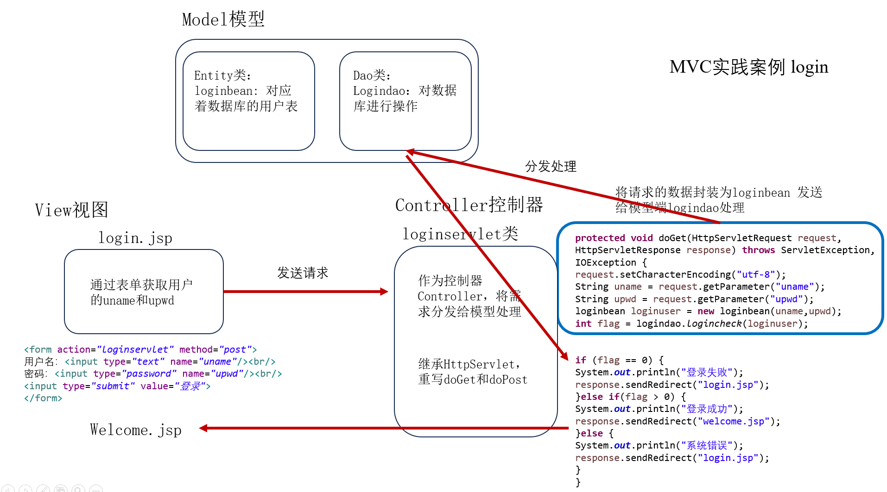login.jsp:
1 | <!-- login.jsp --> |
loginservlet.java
1 | package org.sza; |
logindao.java
1 | package org.sza.dao; |
loginbean.java
1 | package org.sza.entity; |
三层架构详解
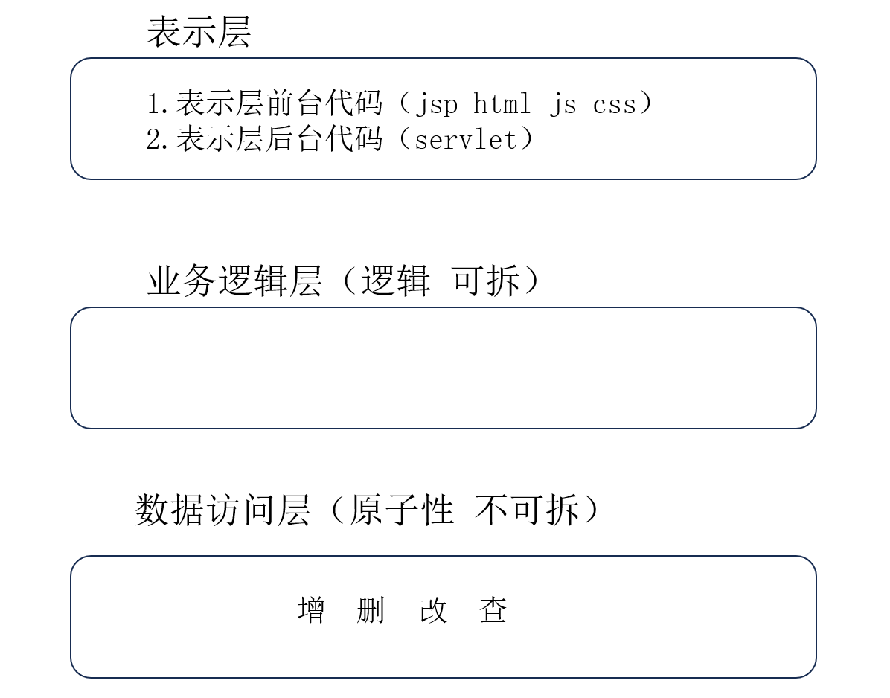 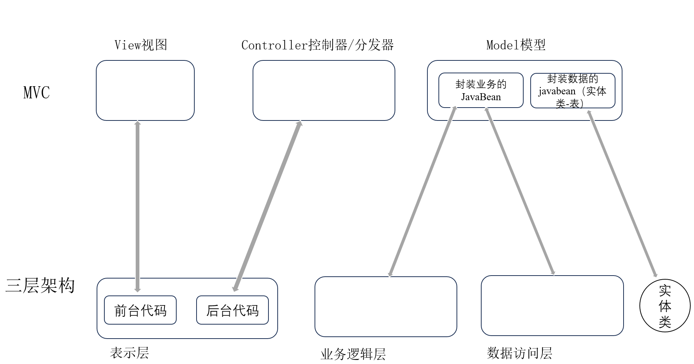三层组成:
- 表示层（USL，User Show Layer 视图层）
- 前台:对应着MVC中的View，用于和用户交互、界面的显示
- 前台技术：jsp html css js jquery等web前端技术
- 代码位置：webcontent
- 后台：对应于MVC中的Controller，用于跳转 调用业务逻辑层
- 后台技术：servlet（springMVC），一般位于xxx.servlet包中
- 前台:对应着MVC中的View，用于和用户交互、界面的显示
- 业务逻辑层（BLL，Business Logic Layer；Service层 ）
- 接受表示层的请求 调用
- 组装数据访问层，逻辑性的操作，可能是数据访问层的操作的组合
- 一般位于xxx.service包中 也可以称为xxx.manager /xxx.bll
- 数据访问层（DAL，Data Access Layer；Dao层）
- 直接访问数据库的操作，原子性的操作（增删改查） 不可拆解
- 一般位于xxx.dao包
- 直接访问数据库的操作，原子性的操作（增删改查） 不可拆解
三层案例: TODO
优化三层：
- 加入接口
- 建议面向接口开发：先接口-再实现类
- service、dao加入接口
- 接口与实现类的命名规范
- 接口：interface 起名 IXxxService、IXxxDao
- 接口所在的包 xxx.service xx.dao
- 实现类：implements 起名 XxxServiceImpl
- 实现类所在的包：xxx.dao.impl xxx.service.impl
- 接口：interface 起名 IXxxService、IXxxDao
- DBUtil 通用的数据库帮助类，可以简化Dao类的代码量
Servlet中的监听器
监听原理：
- 存在事件源：被监听的对象
- 提供监听器：监听的对象
- 为事件源注册监听器，事件源与监听器的绑定
- 操作事件源，产生事件对象，将事件对象传递给监听器，并且执行监听器相应的监听方法。事件：事件源对象的改变–>通过事件获得事件源对象
Servlet中主要用于监听的事件源分别是ServletContext、HttpSession、ServletRequest三个域对象–> application、session、request。
Servlet监听器分为三大类：
- 监听数据域对象创建与销毁的监听器
- 监听数据域对象的属性变更（属性添加、移除、替换）的监听器
- 监听绑定到 HttpSession 域中的某个对象的状态的事件监听器
1. 监听数据域对象创建与销毁的监听器
ServletContextListener : 用来监听ServletContext对象的创建和销毁
- 监听创建 监听销毁
ServletContext对象代表全局唯一对象，每个web工程会产生一个ServletContext,服务器启动创建，服务器关闭销毁
编写监听器
步骤一：编写类实现特定监听器接口
步骤二：注册监听器，不是通过事件源，而是在web.xml 进行配置
（监听器和Servlet、Filter不同，不需要url配置，监听器执行不是由用户访问的，监听器 是由事件源自动调用的）
servletContext域对象何时创建和销毁：
- 创建：服务器启动针对每一个web应用创建servletcontext
- 销毁：服务器关闭前先关闭代表每一个web应用的servletContext
ServletContextListener主流应用：
第一个：在服务器启动时，对一些对象进行初始化，并且将对象保存ServletContext数据范围内(因为在监听器内可以获得事件源对象) — 全局数据
- 例如：创建数据库连接池
第二个：对框架进行初始化 例如：Spring框架初始化通过ServletContextListener (因为监听器代码在服务器启动时执行)
- Spring框架(配置文件随服务器启动加载) org.springframework.web.context.ContextLoaderListener
第三个：实现任务调度，启动定时程序 （Timer、TimerTask） 使一个程序，定时执行
比如说每天晚上十二点给过生日的人进行生日祝福，中国移动对账户进行同步，会在服务器使用较少的时间，例如凌晨之类，启动一段程序，进行同步
java.util.Timer 一种线程设施，用于安排以后在后台线程中执行的任务。可安排任务执行一次，或者定期重复执行。
Timer提供了启动定时任务方法 schedule
* schedule(TimerTask task, Date firstTime, long period) 用来在指定一个时间启动定时器，定期循环执行
* schedule(TimerTask task, long delay, long period) 用来在当前时间delay多少毫秒后启动定时器
停止定时器，timer.cancel取消任务
HttpSession 数据对象创建和销毁监听器 —– HttpSessionListener
- 监听Session对象创建 监听Session对象销毁
Session何时创建：request.getSession()
Session何时销毁：关闭服务器，Session过期，session.invalidate
Session过期时间通过web.xml配置（tomcat配置文件中），默认时间30分钟
HttpServletRequest对象的创建和销毁监听器 —- ServletRequestListener
- 监听request对象创建 监听request对象销毁
Request何时创建：请求发起时创建
Request何时销毁：响应结束时销毁
例如：每次刷新界面都会创建销毁一次
注意（创建销毁次数由请求次数决定）：
使用forward —- request创建销毁几次 —– 一次
使用sendRedirect —- request创建销毁两次 （两次请求）
Demo：写一个三合一的Listener
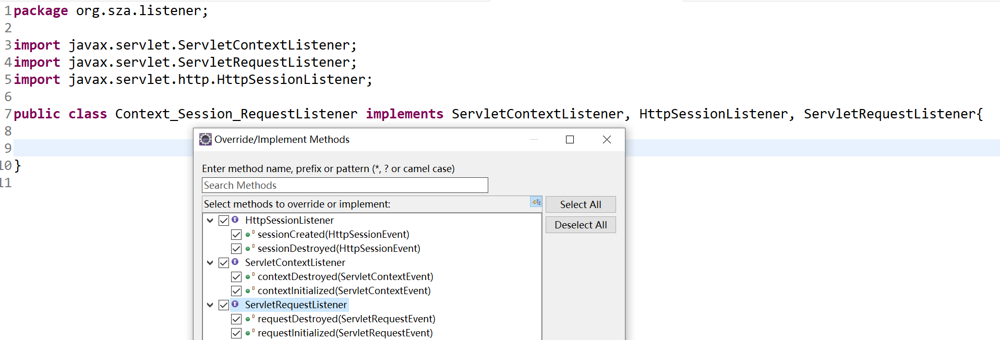步骤一：编写类实现特定监听器接口
1 | /*Context_Session_RequestListener.java |
步骤二：注册监听器，不是通过事件源，而是在web.xml 进行配置 （监听器和Servlet、Filter不同，不需要url配置，监听器执行不是由用户访问的，监听器 是由事件源变化自动调用的）
1 | <listener> |
开启服务器：
第一次访问一个JSP页面（http://localhost:8888/UPload_Download/index.jsp）：
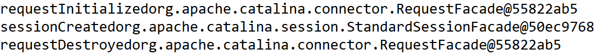第二次访问同一个JSP页面（http://localhost:8888/UPload_Download/index.jsp）：

访问一个servlet（http://localhost:8888/UPload_Download/uploadservlet）：
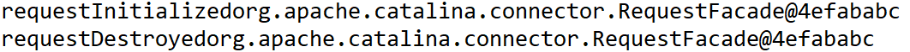具体原因可以看JSP运行原理
Session何时销毁：关闭服务器，Session过期，session.invalidate 不做演示
关闭服务器：
监听数据域对象的属性变更（属性添加、移除、替换）的监听器
Servlet 规范定义了监听 ServletContext、HttpSession、HttpServletRequest 这三个对象中的属性变更事件的监听器，这三个监听器接口分别是 ServletContextAttributeListener、HttpSessionAttributeListener 和 ServletRequestAttributeListener。这三个接口中都定义了三个方法，用来处理被监听对象中属性的增加，删除和替换事件。同一种事件在这三个接口中对应的方法名称完全相同，只是参数类型不同
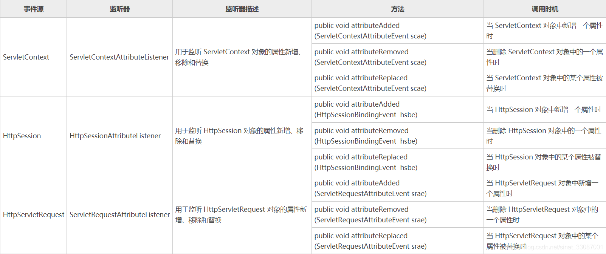监听绑定到 HttpSession 域中的某个对象的状态的事件监听器
Session 中的对象可以有多种状态：绑定到 Session 中、从 Session 中解除绑定、随 Session 对象持久化到存储设备中(钝化)、随 Session 对象从存储设备中恢复（活化）。Servlet 规范中定义了两个特殊的监听器接口，用来帮助对象了解自己在 Session 中的状态：HttpSessionBindingListener 接口和 HttpSessionActivationListener 接口 ，实现这两个接口的类不需要进行注册。
HttpSessionBindingListener Demo:
在该监听器中实现HttpSessionBindingListener接口的两个抽象方法：
1、valueBound()：向HttpSession对象中添加该类对象数据时自动执行该方法
2、valueUnbound()：从HttpSession对象中删除该类对象数据时会自动执行该方法
1 | package org.sza.entity; |
写一个servlet执行一下session.setAttribute和session.removeAttribute
1 | package org.sza.servlet; |
执行http://localhost:8888/UPload_Download/httpsessionbindingdemo
HttpSessionActivationListener：
保存在Session域中的对象有两种存储状态：文件“SESSION.ser”中或内存中
HttpSessionActivationListener接口用于监听实现该接口和Serializable接口的Java类的对象随session钝化和活化事件，可以通过实现HttpSessionActivationListener接口的两个抽象方法来感知存储在HttpSession对象中的该类对象数据从内存保存到“SESSION.ser”文件中和从“SESSION.ser”文件中读取到内存中的时机
创建HttpSessionActivationListener监听器：
1、创建一个普通Java类，实现HttpSessionActivationListener接口
2、(eclipse)直接创建一个Listener，选择实现HttpSessionActivationListener接口
在该监听器中实现HttpSessionActivationListener接口的两个抽象方法：
1、sessionDidActivate()：当绑定到HttpSession对象中的对象将要随HttpSession对象被活化（从硬盘中“SESSION.ser”文件内读到内存中）之后，自动执行该方法
2、sessionWillPassivate()：当绑定到HttpSession对象中的对象将要随HttpSession对象被钝化（向硬盘中“SESSION.ser”文件内写入HttpSession对象）之前，自动执行该方法